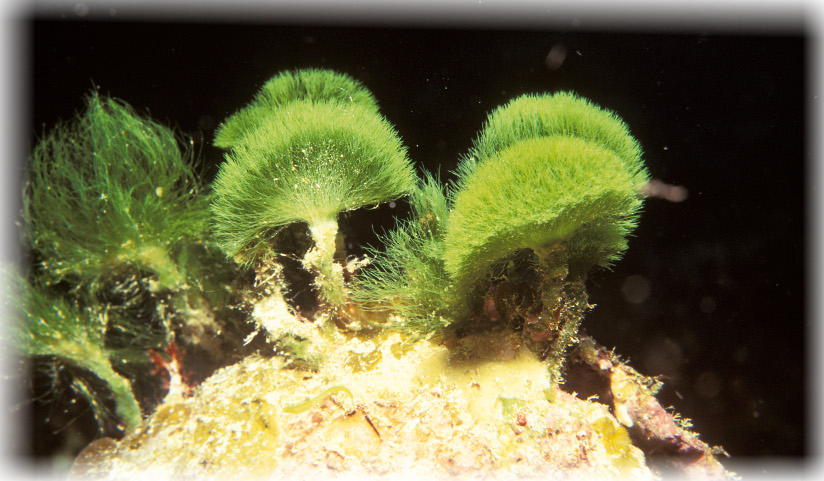
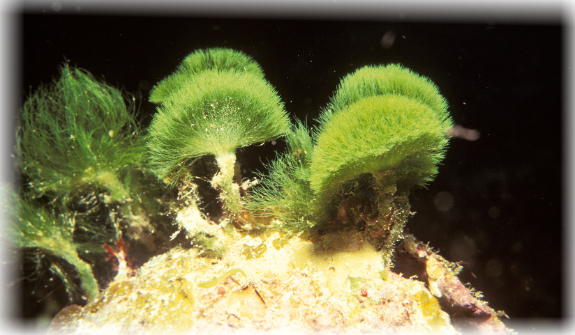

2018 est l'année internationale des récifs coralliens
Les récifs coralliens [sont] toujours menacés de disparition en raison du changement climatique.
L'Année internationale des récifs coralliens a été lancée le 24 janvier 2008 à l'occasion de la conférence de l'Initiative internationale sur les récifs coralliens (Icri) qui s'est tenue à Washington. Cette campagne mondiale de protection et de sensibilisation sur les récifs coralliens coïncide avec la publication d'un rapport scientifique, présenté par l'UNESCO le 28 janvier, qui traite du grave blanchissement qui a touché les coraux des Caraïbes en 2005.
Près de 500 millions de personnes au niveau mondial dépendraient de récifs coralliens en bonne santé pour leur subsistance, la protection des côtes, les ressources renouvelables et le tourisme.


 
